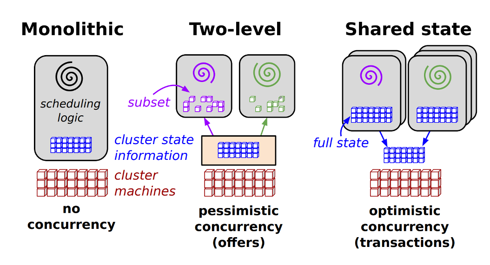

调度系统
最近在进行晋级答辩(已失败 :<)，主题还是去年做了一些调度方面的工作，借此机会对调度系统进行一些高维度的思考，在此记录下，如有不足之处，还望看官大人指出。
调度的目的(什么是调度系统)
调度的目的其实是在满足资源需求的前提下，提升资源利用率、稳定性、以及性能（吞吐、延迟）等。不同层次都有调度的问题需要解决，微架构下的指令调度，OS 层面的线程调度，集群层面的任务调度等。 例如 PL(编程语言)中的内存管理系统其实也是个调度系统，C 需要手动的 malloc 申请内存，free 释放内存，手动分配带来了很多问题。比如内存分配到栈还是堆，什么时候需要释放，悬挂指针、内存泄漏等问题。为了更加有效的管理内存分配，现代编程语言都垃圾回收期以及内存分类器来自动的管理内存，比如 rust 通过 borrow checker、ownership、borrow 来管理并确保跨堆栈和堆的内存管理。
调度器分类以及常见调度器
按照调度时机可以分为首次调度和运行时调度（也叫重调度），我们见到的大部分调度器都是首次调度。 针对调度器的架构，可分为单体(Monolithic)调度器、两层调度器、状态共享调度器这三类。

调度器分类 (figure 1)
单体式调度器
首先单体式调度器的资源请求、任务调度、任务状态、资源状态都是通过该实例进行管理和同步的。OS 进程、线程调度，Hadoop YARN 调度器以及 Kubernetes 原生调度器都属于此类调度器。